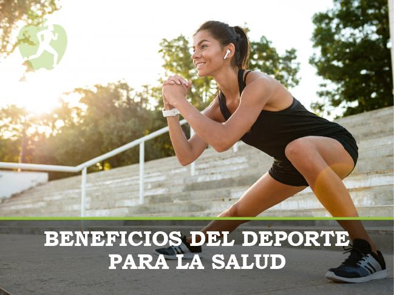

- Tiene una gran cantidad de beneficios, ayuda al estres, depresion, obecidad y muchas màs cosas

Beneficios del deporte
El practicar un deporte, ayuda mucho en tu vida, tanto fisicamente como mentalmente
- mejora la resistencia
- capacidad pulmonar
- ayuda a la buena circulacion de la sangre
- Produce hormonas del bienestar
- Ayuda al sistemas inmunologico
- Incrementa la densidad òsea
Otras cosas que el deporte crea es:
- podemos crear disciplina
- constancia
- sacrificios
cosas realmente importantes en la vida cotidiana
Algunos deportes màs importantes y famosos son:
- Nataciòn
- Ciclismo
- Atletismo
- Futbol
- Basquet
- Voley
- Gym
- Tennis
- Boxeo
Existen muchos màs pero esos son los màs famosos y favoritos de la mayoria de la gente